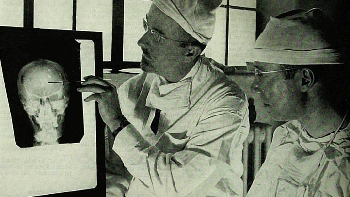

Mental illnesses are diseases of the brain. The history of mental illness began the first record of written words. In ancient times, different countries had different ways to treat people. For example, in ancient China, mental disorders were treated under traditional Chinese medicine by using herbs, acupuncture or “emotional therapy.” However, in Mesopotamia, people with mental disorders were regarded as “hands” of gods because people believed that mental illnesses were caused by gods. A great leap in Greek occurred in 400 B.C. "when Greek physician, Hippocrates, began to treat mental illnesses as physiological illnesses," according to HealthyPlace.
In Europe, people with mental illnesses can be free in some places if they didn’t have any sign to show they were dangerous. However, in other places in Europe, "the mentally ill were treated poorly and said be to witches," according to HealthyPlace.
In the 1600s, Europeans began to treat people with mental disorders inhumanly. They usually tied them to the wall or leave them in the dungeon.
In the 1700s, many people were concerned about treating people with mental disorders. In some places, people were not allowed to torture the mentally ill. However, mistreatment still existed.
The mentally ill were regarded as a "a sign of madness, warranting imprisonment in merciless conditions" during the 19th century, according to the Medical News Today. Dorothea Dix, a U.S. reformer, urged to change the thoughts. She set up hospitals where doctors would treat the mentally ill in a humane way. Unfortunately, the humane treatment didn’t cure them, leading an emphasis on custodial care, according to HealthyPlace.
At the end of 1880s, Emil Kraepelin, a German psychologist, started to study mental illnesses in a scientific way.
Kraepelin’s classification gained popularity, which separated mood disorders from schizophrenia, which is a mental disorder characterized by "delusions, hallucinations or disorganized speech," according to the Mayo Clinic.
In the U.S., a “mental hygiene” movement took place, which aimed to prevent mental health illnesses through public health methods and clinics, according to HealthyPlace. After decades of the beginning of the movement, President Harry Truman enacted a law — The National Mental Health Act in 1946 — that granted financial assistance for the National Institute of Mental Health, according to Wikipedia. "The act made the mental health of the people a federal priority."
In the mid-1950s, the number of hospitalized people with mental disorders peaked at around 560,000 in the U.S., which made many people expelled from those institutions. However, many people become homeless after that due to the lack of housing and follow-up care.
Meanwhile, Portuguese neurologist António Egas Moniz invested in a lobotomy. It is a form of psychosurgery that involves incision into prefrontal lobe of the brain. Many people with mental illness accepted the surgery during that time, including the sister of John F. Kennedy, Rosemary Kennedy.
Photo © SEPS. Used courtesy of Curtis Licensing.
Although now this infamous treatment is regarded as a way that is contrary to the principles of humanity, it was extremely popular among doctors in the 1950s. Some doctors called it as "soul surgery" because the behaviors of people will change a lot after the surgery. Hence, they liked to do the surgery because they felt like they made a difference in others' souls. However, as time goes by, psychologists found the treatment was not scientific and efficient. In 1950, the Soviet Union banned this procedure. Doctors in the Soviet Union said "through lobotomy, an insane person is changed into an idiot." By the 1970s, many countries had banned the use of this program.
Nowadays, ways to treat the mentally ill tend to be more scientific. People tend to know more about mental health illnesses and the factors that lead to mental health illnesses. More and more people in the world can be sympathetic to people with mental disorders. They will learn to relax to prevent mental illness. Even though in some places, people still feel the mentally ill are dangerous, but the law will help protect people with mental illnesses.